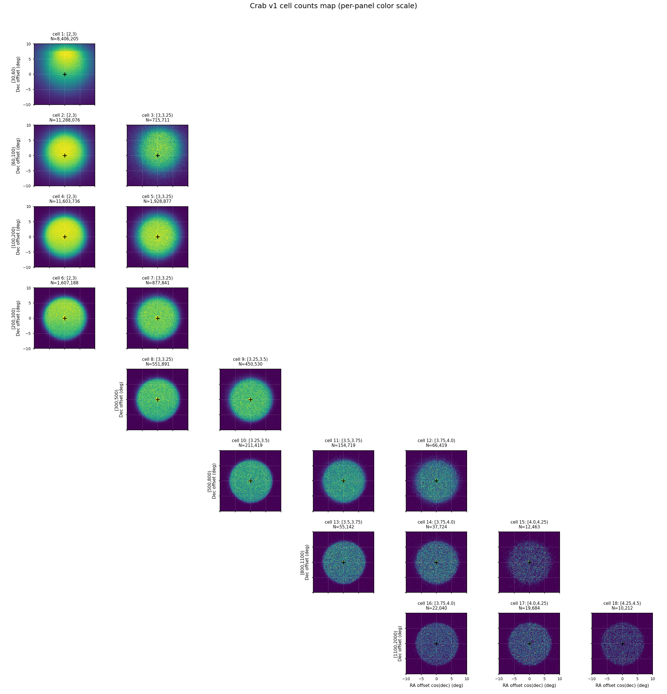
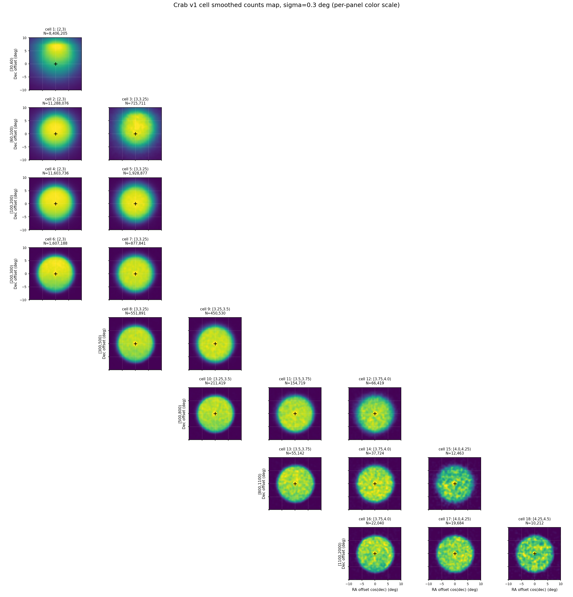
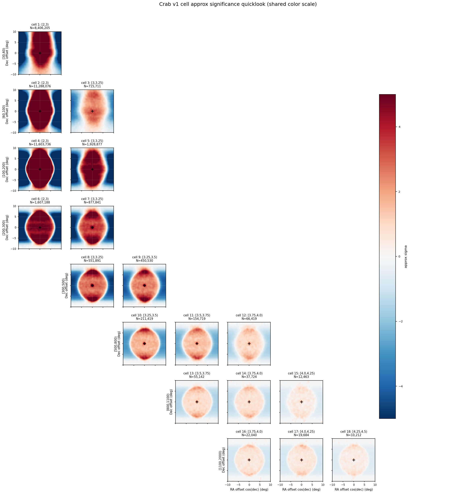

Crab v1 Cell Sky Maps — 18 个 ML 能量 × Nhit 单元天图诊断¶
日期： 2026-05-23
目标： 对 apply/config/cell_selection_v1.csv 中的 18 个 v1 (Nhit, log10 E_pred) cell，分别绘制 Crab 附近观测事例的局部天图，检查方向坐标、cell 分箱、观测规约和后续背景估计前的输入质量。
这是一组 Stage C/D/E 之间的诊断图。当前产物包括 counts map、smoothed counts map，以及一个用等赤纬 sideband 近似背景得到的 quicklook significance map。第三类图只用于快速看结构，不作为最终物理背景或 Li-Ma 显著性结果。
1. 输入与选择¶
本次运行使用全量 observation eval ROOT 与 recovered-time friend tree：
| 项目 | 数值 / 路径 |
|---|---|
| 观测 eval ROOT | /mnt/mydisk/WCDA_observation_eval/<MMDD>/Esg*.root |
| recovered time ROOT | /mnt/mydisk/WCDA_observation_eval/recovered_time/<MMDD>/*.time.root |
| cell selection | apply/config/cell_selection_v1.csv |
| 画图脚本 | apply/plot_crab_cell_skymaps.py |
| 输出目录 | apply/plot/crab_cell_skymaps/ |
| 输入文件对 | 1258 |
| entry 对齐方式 | 同名 ROOT 与 .time.root 按 entry 顺序对齐 |
| missing time files | 0 |
| entry mismatch files | 0 |
事件选择：
match_status == 0
pincness < 1.1
fitstat == 0
theta < 50 deg
用于分 cell 的观测量：
nv
ml_logE_pred
ra_mean_deg
dec_mean_deg
Crab 坐标固定为：
RA = 83.63 deg
Dec = 22.01 deg
2. 投影与图像参数¶
局部天图使用 Crab 中心附近的近似 tangent-plane offset：
x = wrap(ra_mean_deg - RA_Crab) * cos(Dec_Crab)
y = dec_mean_deg - Dec_Crab
其中 x 和 y 单位都是 degree。虽然 Crab 不靠近 RA 0/360，脚本仍然对 RA offset 做了 wrap。
默认图像参数：
| 参数 | 数值 |
|---|---|
| ROI half-width | 10 deg |
| pixel size | 0.1 deg |
| 每个 cell map shape | 200 × 200 |
| smoothing sigma | 0.3 deg |
| source exclusion radius for sideband quicklook | 2.0 deg |
| sideband statistic | mean per Dec strip |
3. 全量运行统计¶
全量命令：
/home/server/anaconda3/envs/py310/bin/python apply/plot_crab_cell_skymaps.py --print-every 100
总体统计：
| 指标 | 数值 |
|---|---|
| processed files | 1258 / 1258 |
| total entries seen | 127,692,389 |
| cut + match events | 127,691,852 |
| Crab 10 deg ROI events, all cells | 45,502,526 |
| Crab 10 deg ROI events, selected v1 cells | 38,019,877 |
| selected v1 cells / all ROI | 83.56% |
| output map tensor shape | 18 × 200 × 200 |
每个 v1 cell 的事例数：
| cell | Nhit bin | log10 E_pred bin | cut + match events | Crab ROI events |
|---|---|---|---|---|
| 1 | [30,60) |
[2,3) |
24,516,301 | 8,406,205 |
| 2 | [60,100) |
[2,3) |
30,974,777 | 11,288,076 |
| 3 | [60,100) |
[3,3.25) |
2,297,063 | 715,711 |
| 4 | [100,200) |
[2,3) |
30,297,474 | 11,603,736 |
| 5 | [100,200) |
[3,3.25) |
5,575,540 | 1,928,877 |
| 6 | [200,300) |
[2,3) |
4,025,524 | 1,607,188 |
| 7 | [200,300) |
[3,3.25) |
2,376,396 | 877,841 |
| 8 | [300,500) |
[3,3.25) |
1,400,831 | 551,891 |
| 9 | [300,500) |
[3.25,3.5) |
1,230,287 | 450,530 |
| 10 | [500,800) |
[3.25,3.5) |
532,506 | 211,419 |
| 11 | [500,800) |
[3.5,3.75) |
424,891 | 154,719 |
| 12 | [500,800) |
[3.75,4.0) |
200,583 | 66,419 |
| 13 | [800,1100) |
[3.5,3.75) |
139,393 | 55,142 |
| 14 | [800,1100) |
[3.75,4.0) |
102,608 | 37,724 |
| 15 | [800,1100) |
[4.0,4.25) |
38,081 | 12,463 |
| 16 | [1100,2000) |
[3.75,4.0) |
55,576 | 22,040 |
| 17 | [1100,2000) |
[4.0,4.25) |
52,471 | 19,684 |
| 18 | [1100,2000) |
[4.25,4.5) |
28,669 | 10,212 |
最低统计 cell 仍有 10,212 个 Crab ROI 事例，因此 counts map 作为首版 sanity check 是可用的。
4. Counts Map¶
Counts map 只显示观测事例数：
N_data(x, y | cell b)
它的价值是检查：
- cell 分箱是否能稳定覆盖 Crab 附近观测数据；
- RA/Dec 与 recovered-time friend tree 的 entry 对齐是否正常；
- 局部天空是否有明显空洞、条纹或坐标错位；
- 高 Nhit / 高预测能量 cell 是否仍有足够统计。

5. Smoothed Counts Map¶
Smoothed counts map 对每个 cell 的 counts map 做 sigma = 0.3 deg 的 Gaussian smoothing。这个版本主要用于肉眼检查局部结构和潜在源点，不改变原始 counts map 的定义。

6. Approx Sideband Significance Quicklook¶
第三张图使用一个非常简单的等赤纬 sideband 近似背景：
- 对每个 cell 和每个 Dec strip，排除 Crab 中心
2 deg内区域； - 用同一 strip 剩余 RA-offset bins 的 mean 作为局部背景水平；
- 对 counts 和 background 都做
0.3 degsmoothing； - 计算：
approx_sigma = (smoothed_counts - smoothed_background) / sqrt(smoothed_background)
这不是直接积分法背景，也不是 Li-Ma significance。它只用于快速诊断源区是否在高贡献 cell 中冒出来，以及是否存在大尺度结构或明显 acceptance 问题。

7. 当前结论¶
- 数据连接是干净的。 1258 对 eval ROOT 与 recovered-time ROOT 全部找到，
t_eventout与t_recovered_time没有 entry mismatch。 - 18 个 v1 cell 都有足够统计。 全量 Crab ROI 中，v1 selected cells 合计
38,019,877个事例；最低统计 cell 仍有10,212个 ROI 事例。 - counts map 可以作为 Stage C 输出质量检查。 这组图能直接检查坐标、cell 分箱、friend tree 对齐和局部天空覆盖。
- quicklook significance 只能作诊断。 它没有替代 Stage D 的直接积分法背景，不能用于最终 SED 或物理显著性声明。
8. 下一步¶
- 实现 Stage D 的正式背景估计：直接积分法或严格等赤纬背景。
- 输出每个 cell 的
background map、excess map和 Li-Masignificance map。 - 将 smoothing 半径从统一
0.3 deg改为按 cell 的 PSFsigma_b设置。 - 对高贡献 cell 检查 Crab spot 的 centroid 与宽度，确认坐标和 PSF 没有系统偏移。
- 将正式
N_on / N_off / alpha / excess / significance接入后续 forward-folding SED 拟合。
9. 产物清单¶
本次诊断生成的本地文件：
apply/plot_crab_cell_skymaps.py
apply/plot/crab_cell_skymaps/crab_v1_counts_grid.png
apply/plot/crab_cell_skymaps/crab_v1_smoothed_counts_grid.png
apply/plot/crab_cell_skymaps/crab_v1_approx_significance_grid.png
apply/plot/crab_cell_skymaps/crab_v1_maps.npz
apply/plot/crab_cell_skymaps/crab_v1_maps_meta.json
报告源文件：
apply/report/crab_v1_cell_skymaps.md